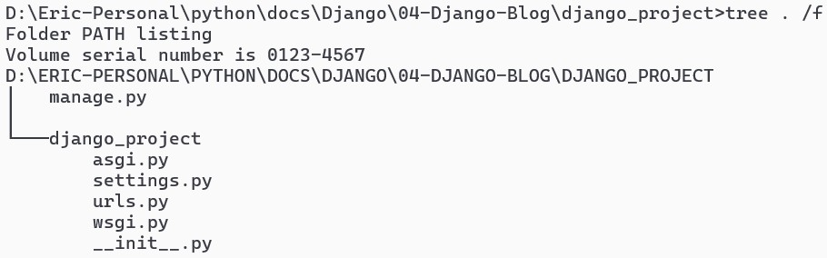

12. Blog-get started (Django)#
12.1. Intro#
Django is a high-level Python web framework that encourages rapid development and clean, pragmatic design. In this tutorial, we’ll cover the basics of Django, including setting up a project, creating applications, handling databases, and more.
Tools Needed
Python (version 3.6 or higher)
Django (latest version)
Text editor or IDE (VS Code, PyCharm, etc.)
12.2. Setting Up Django#
12.2.1. Step 1: Install Django#
pip install django
12.2.2. Step 2: Create a Django Project#
django-admin startproject django_project
cd django_project
12.2.3. Step 3: Run the Development Server#
Visit
http://127.0.0.1:8000/to see your project running.
python manage.py runserver
12.2.4. Check the project structure using tree#

12.3. Creating a Django Application#
12.3.1. Start an App#
python manage.py startapp blog
12.3.2. Register the App#
It’s important for Django to search
templatesand register database [Models]Add
blog.apps.BlogConfigto theINSTALLED_APPSlist indjango_project/settings.py:INSTALLED_APPS = [ "blog.apps.BlogConfig", ... ]
12.3.3. Creating new table [Model] in Database#
Construct database schema at
blog/models.pyfrom django.db import models class Post(models.Model): title = models.CharField(max_length=50) content = models.TextField() date_posted = models.DateTimeField(auto_now_add=True) def __str__(self): return self.title
Register
ModelsinAdminusingblog/admin.pyfrom django.contrib import admin from .models import Post admin.site.register(Post)
Sync the database modification (Make Migrations)
python manage.py makemigrations python manage.py migrate
12.3.4. Creating Views#
In
blog/views.pyfrom django.shortcuts import render from .models import Post def home(request): context = { 'posts': Post.objects.all() } return render(request, 'blog/home.html', context)
Create a
templates/blogdirectory underblogand addbase.htmlIn this tutorial, we use
bootstrap@5.0<!DOCTYPE html> <html lang="en"> <head> <!-- Required meta tags --> <meta charset="utf-8" /> <meta name="viewport" content="width=device-width, initial-scale=1" /> <!-- Bootstrap CSS --> <link href="https://cdn.jsdelivr.net/npm/bootstrap@5.0.2/dist/css/bootstrap.min.css" rel="stylesheet" integrity="sha384-EVSTQN3/azprG1Anm3QDgpJLIm9Nao0Yz1ztcQTwFspd3yD65VohhpuuCOmLASjC" crossorigin="anonymous" /> {% if title %} <title>Django Blog - {{title}}</title> {% else %} <title>Django Blog</title> {% endif %} </head> <body> <div class="container"> {% block blog-content%} {% endblock %} </div> <script src="https://cdn.jsdelivr.net/npm/bootstrap@5.0.2/dist/js/bootstrap.bundle.min.js" integrity="sha384-MrcW6ZMFYlzcLA8Nl+NtUVF0sA7MsXsP1UyJoMp4YLEuNSfAP+JcXn/tWtIaxVXM" crossorigin="anonymous"></script> </body> </html>
Extend (inherent)
base.htmltohome.htmland replaceblog-content{% extends 'blog/base.html' %} {% block blog-content%} {% if posts %} {% for post in posts %} <div> <h2>{{ post.title }}</h2> <p>By {{ post.author }} on {{ post.date_posted }}</p> <p>{{ post.content }}</p> </div> {% endfor %} {% endif %} {% endblock blog-content%}
12.3.5. Configuring URLs#
In
blog/urls.py:from django.urls import path from . import views urlpatterns = [ path('', views.home, name='blog-home'), ]
In
django_project/urls.pyfrom django.contrib import admin from django.urls import include, path urlpatterns = [ path('admin/', admin.site.urls), path('', include('blog.urls')), ]
12.4. Creating views using templates#
In Django,
templatesare used to generateHTMLdynamically.The
templatesystem allows you to useinheritanceandincludesto manage common layouts and components.
12.4.1. Template Inheritance and Structure#
Django templates support
inheritance, allowing you to define a base template and extend it in other templates.Template Extends Blocks Defined Blocks Filled base.html - extra_styles, main - navigation.html - - - main.html base.html blog-content extra_styles, main home.html main.html - blog-content
12.4.2. Base Template (base.html)#
The base template defines the common structure of your web pages.
Key points
Inheritance: Defines a base layout with
headandbodysections.Blocks: Defines
extra_stylesandmainblocks that child templates can override.Conditional Rendering: Uses
{% if title %}to conditionally set the page title.Include: Includes a separate
navigation.htmltemplate.<!DOCTYPE html> <html lang="en"> <head> <!-- Required meta tags --> <meta charset="utf-8" /> <meta name="viewport" content="width=device-width, initial-scale=1" /> <!-- Bootstrap CSS --> <link href="https://cdn.jsdelivr.net/npm/bootstrap@5.0.2/dist/css/bootstrap.min.css" rel="stylesheet" /> {% if title %} <title>Django Blog - {{title}}</title> {% else %} <title>Django Blog</title> {% endif %} {% block extra_styles %} {% endblock %} </head> <body> {% include 'blog/navigation.html' %} {% block main %} {% endblock %} <script src="https://cdn.jsdelivr.net/npm/bootstrap@5.0.2/dist/js/bootstrap.bundle.min.js"></script> </body> </html>
12.4.4. Main Template (main.html)#
Extends the base template and adds extra styles and a main content area.
Key points
Extends Base Template: Inherits the structure from
base.html.Static Files: Loads static CSS file with
{% load static %}and{% static 'blog/main.css' %}.Blocks: Adds
blog-contentblock inside themainblock.{% extends 'blog/base.html' %} {% load static %} {% block extra_styles %} <link rel="stylesheet" type="text/css" href="{% static 'blog/main.css' %}"> {% endblock %} {% block main %} <main role="main" class="container"> <div class="row"> <div class="col-md-8"> {% block blog-content %} {% endblock %} </div> <div class="col-md-4"> <div class="content-section"> <h3>Sidebar</h3> <p class='text-muted'>You can put any information here you'd like. <ul class="list-group"> <li class="list-group-item list-group-item-light">Latest Posts</li> <li class="list-group-item list-group-item-light">Announcements</li> <li class="list-group-item list-group-item-light">Calendars</li> <li class="list-group-item list-group-item-light">etc</li> </ul> </p> </div> </div> </div> </main> {% endblock %}
12.4.5. Home Template (home.html)#
Extends the
maintemplate and provides content for theblog-contentblock.{% extends 'blog/main.html' %} {% block blog-content%} {% if posts %} {% for post in posts %} <div> <article class="media content-section"> <div class="media-body"> <div class="article-metadata"> <a class="mr-2" href="#">{{ post.author }}</a> <small class="text-muted">{{ post.date_posted }}</small> </div> <h2><a class="article-title" href="#">{{ post.title }}</a></h2> <p class="article-content">{{ post.content }}</p> </div> </article> </div> {% endfor %} {% endif %} {% endblock blog-content%}
12.5. Django Admin#
Django’s admin interface is a powerful tool for managing application data.
It provides a web-based interface for
CRUD(Create, Read, Update, Delete) operations.
12.5.1. Enable the Admin Interface#
Ensure the following in your
django_project/settings.py:django.contrib.admin: Enables the admin site.django.contrib.auth: Provides authentication framework.django.contrib.contenttypes: Provides content type framework.django.contrib.sessions: Manages user sessions.django.contrib.messages: Provides messaging framework.django.contrib.staticfiles: Manages static files.INSTALLED_APPS = [ ... 'django.contrib.admin', 'django.contrib.auth', 'django.contrib.contenttypes', 'django.contrib.sessions', 'django.contrib.messages', 'django.contrib.staticfiles', ... ]
12.5.2. Create a Superuser#
To access the admin site, create a superuser:
python manage.py createsuperuser
Follow the prompts to set a username, email, and password.
12.5.3. Add Models to the Admin#
To manage your models in the
admininterface, register them inadmin.py.Example (
blog/admin.py)admin.site.register(Model): Registers the model with the admin interface.from django.contrib import admin from .models import Post, Comment admin.site.register(Post)